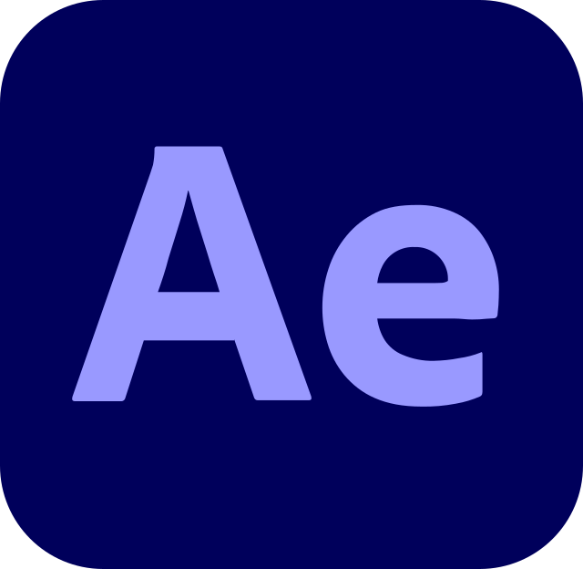
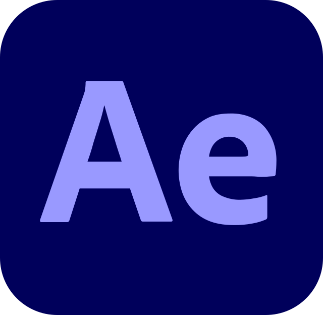
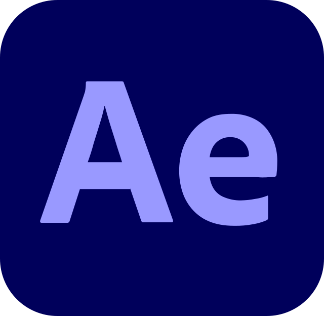

Detalles del Proyecto
- Duración: 2 minutos
- Técnica: Animación, modelado 3D y producción audiovisual
- Software: Blender, After Effects, Premiere
- Fecha de Finalización: Junio 2024
 

Este proyecto consistió en la creación de un video promocional para la marca de cosméticos Visage Divine, donde se modelaron productos y una tienda, se generaron secuencias animadas y se realizaron renders con una estética realista, combinando todos los elementos en la postproducción para lograr un resultado visualmente atractivo y de alta calidad.
Se modelaron en detalle dos de los productos insignia de la marca: un iluminador y una pestañina. El proceso incluyó la creación de superficies realistas, texturas detalladas y materiales que reflejaran con precisión el aspecto de los cosméticos. La meta era captar la elegancia y calidad premium de Visage Divine, logrando que cada producto resaltara visualmente.
La tienda fue diseñada y modelada en 3D para funcionar como el escenario principal del promocional. Se conceptualizó un espacio moderno, minimalista y sofisticado, que reflejara la esencia de lujo de la marca. Cada elemento, desde las vitrinas hasta la disposición de los productos, fue cuidadosamente diseñado para crear una atmósfera que potenciara la experiencia visual del espectador.
Se crearon secuencias animadas que mostraban los productos en distintas situaciones, como en la tienda y en primeros planos detallados, con un enfoque en la estética realista. Los juegos de luces fueron fundamentales para destacar la textura y los acabados de los productos, simulando una iluminación profesional que enfatizara los reflejos y sombras naturales. Se realizaron varios renders con alta calidad para captar los pequeños detalles y lograr una sensación visualmente envolvente.
En la fase de postproducción, se trabajó en la combinación de todas las secuencias y renders. Se ajustaron los colores, se optimizó el contraste y se perfeccionaron los detalles visuales para garantizar un acabado pulido. Además, se añadió una pista de sonido cuidadosamente seleccionada, alineada con la identidad de la marca, y se realizaron ajustes de sonido para acompañar el ritmo del video promocional.
